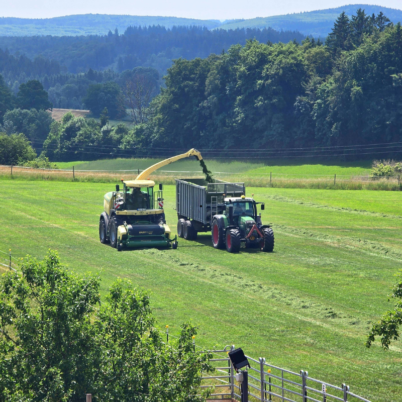
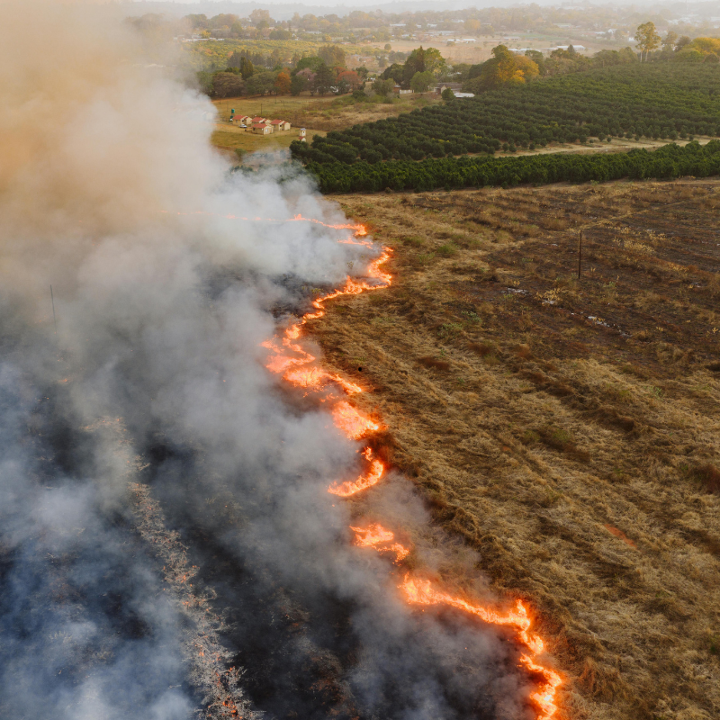
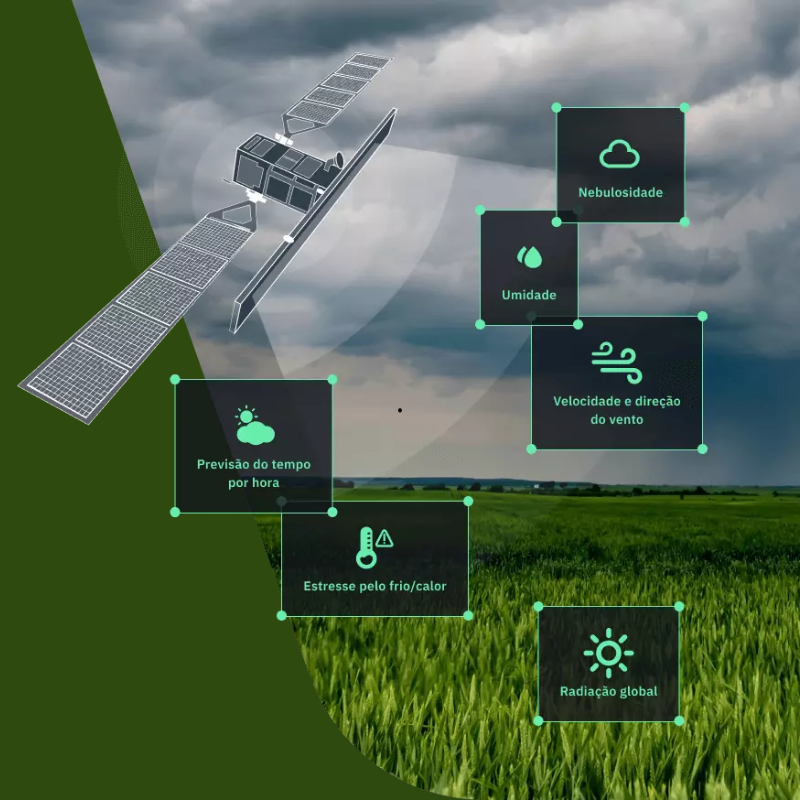
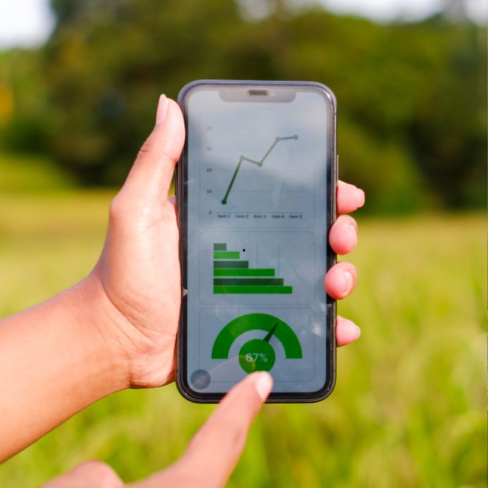

Sobre a Floratech
Transformando dados de satélites em alertas reais para quem vive e trabalha no campo.
Como funciona

O contexto e o problema
São 5h da manhã. O produtor rural acorda antes do sol, olha para o céu seco e se pergunta: vai chover? Tem risco de queimada na minha região? O transporte do meu produto vai ser afetado?
Pequenos e médios produtores raramente têm acesso a sistemas de monitoramento climático profissional. As queimadas custam bilhões ao agronegócio e destroem safras inteiras — muitas vezes por falta de informação antecipada.

Dados públicos que poucos acessam
O INPE publica diariamente dados precisos de focos de calor, cobertura de nuvens, precipitação e risco climático. Mas essas informações ficam presas em interfaces técnicas inacessíveis para o produtor comum.
Identificamos aí uma oportunidade: traduzir dados públicos e confiáveis em linguagem simples, direta e acionável para quem trabalha na terra.

Nossa solução
A Floratech é uma plataforma gratuita de monitoramento climático que conecta dados reais do INPE a alertas simples e visuais. O produtor seleciona seu estado e recebe instantaneamente o score de risco de queimadas, dias sem chuva, precipitação e histórico.
Sem instalação, sem mensalidade. Funciona em qualquer celular ou computador.
Ver painel de risco